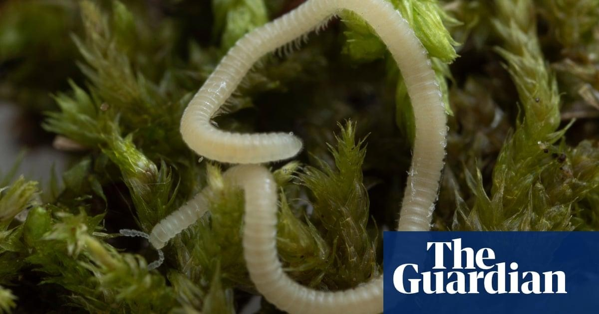

Leggy new star discovered four inches under Los Angeles: the thread millipedeThe city of angels, a metropolis of freeways and traffic, has a newly discovered species named in its honor: the Los Angeles thread millipede. The tiny arthropod was found just underground by naturalists at a southern California hiking area – near a freeway, a Starbucks and an Oakley sunglasses store. About the length of a paperclip but skinny as pencil lead, it’s translucent and sinuous like a jellyfish tentacle. The creature burrows four inches below ground, secretes unusual chemicals and is blind, relying on hornlike antennae protruding from its head to find its way. Under a microscope, the millipede, with its 486 legs and helmet-like head, resembles a creature in a Hollywood monster film. “It’s amazing to think these millipedes are crawling in the inner cracks and crevices between little pieces of rock below our feet in Los Angeles,” said entomologist Paul Marek of the Virginia Polytechnic Institute. He was part of the research team that included scientists from West Virginia University and the University of California, Berkeley. Their findings on the species, whose scientific name is Illacme socal, were published on 21 June in the journal ZooKeys. The species’ vernacular name is the Los Angeles thread millipede. “It goes to show that there’s this undiscovered planet underground,” Marek added. I socal joins other millipedes found in the state, including one that until recently held the crown for having the most legs of any creature ever recorded – a whopping 750 limbs. It is aptly named Illacme plenipes, Latin for “in highest fulfillment of feet”. Discovered in 1926 in a small area in northern California, it was believed to be the leggiest creature on Earth until 2021, when a millipede with 1,306 legs was found in Australia. Millipedes feed on dead organic material and without them people would be “up to our necks” in it, Marek said. “By knowing something about the species that fulfill these really important ecological roles, we can protect them and then the environment that protects us as well,” he said. iNaturalist, a citizen naturalist app, led Marek to the discovery. Naturalists Cedric Lee and James Bailey posted on the app the critter they found when they were out collecting slugs at Whiting Ranch Wilderness Park in nearby Orange county four years ago. The team used DNA sequencing and analysis to prove it was indeed a new species. Lee, a doctoral student at UC Berkeley, has discovered and documented 30 centipede species in California. He said microorganisms have been often neglected in the search for new species, but thanks to modern tools available to anyone, citizen science can be a bridge between the natural world and the lab. “We don’t know what’s completely out there,” Lee said. “There’s literally undescribed species right under our feet.” Scientists estimate that 10 million animal species live on Earth, but only 1 million have been discovered. “What we don’t know is far more than what we know in terms of insect species and small creatures around the world,” said Brian Brown, the curator of entomology at the Natural History Museum of Los Angeles County. After having led a four-year research project called BioSCAN, which planted insect traps throughout back yards in the city, Brown estimates 20,000 species of insects inhabit Los Angeles alone, both discovered and undiscovered. But he worries about threats to native species, such as the climate crisis and invasive species. “It really is going to take a lot more work and effort to try and save, try and document the species before they all go extinct,” he said. Daniel Gluesenkamp, the president of the California Institute for Biodiversity, who was not involved in the research, points to the Los Angeles thread millipede as the perfect example of an unexplored frontier. “We need to be investing in local parks, we need to be saving any little patch of wild land, even if it’s surrounded by housing and parking lots,” Gluesenkamp said. “We need to know what’s there so that we can protect it and use it as a solution in the tremendously challenging times ahead.” |
 |